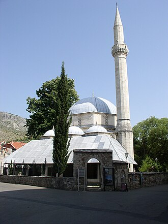

PrésentationتقديمOverview
La mosquée de Karađoz-bey est située en Bosnie-Herzégovine, sur le territoire de la ville de Mostar. Construite en 1557 et 1558, elle est inscrite sur la liste des monuments nationaux de Bosnie-Herzégovine.
مسجد كركوز بك ) هو مسجد من القرن السادس عشر منذ عهد الدولة العثمانية في مدينة موستار البوسنة والهرسك. يتميز المسجد بقبة كبيرة ومئذنة عالية وهو المسجد الأكبر في المنطقة.
The Karađoz Bey Mosque is a Sunni mosque, located in the city of Mostar, Bosnia and Herzegovina. Completed in 965 AH (1557/1558 CE) during the Ottoman era, the mosque was destroyed in the early 1990s during the Bosnian War, and rebuilt in 2004.
Karagöz Bey Camii, Bosna-Hersek'in Mostar şehrinde 16. yüzyıldan kalma bir Osmanlı camisidir. Büyük kubbesi ve yüksek minaresiyle bölgenin en büyüğüdür.
کرادوز بے مسجد بوسنیا و ہرزیگووینا کا ایک مسجد جو موستار میں واقع ہے۔
Die Karađozbeg-Moschee in Mostar ist eine im überwiegend muslimischen Ostteil der Stadt an der Karađozbegova-Straße gelegene Moschee in Bosnien und Herzegowina.
La moschea di Karađoz Bey è una moschea ottomana della città di Mostar, in Bosnia-Erzegovina.
Мечеть Караджоз-бей — османская мечеть XVI века в городе Мостар, Босния и Герцеговина.
Sur la carteعلى الخريطةOn the map
Documents et liensوثائق وروابطDocuments and links
- Wikipédia — Français
- Wikipédia — العربية
- Wikipédia — English
- Wikipédia — Türkçe
- Wikipédia — اردو
- Wikipédia — Deutsch
- Wikipédia — Italiano
- Wikipédia — Русский
- Wikidata — Q1729060
Données : Wikidata (CC0), mises à jour tous les 3 mois. L'année est la plus ancienne date de construction connue du bâtiment : pour un édifice devenu mosquée plus tard (comme Sainte-Sophie), c'est celle du bâtiment d'origine. Photos : Wikimedia Commons, auteur et licence sur la page de chaque photo.البيانات: ويكي بيانات (CC0)، تُحدَّث كل 3 أشهر. السنة هي أقدم تاريخ معروف لبناء المبنى: فإن صار مسجدًا لاحقًا (مثل آيا صوفيا) فهي سنة المبنى الأصلي. الصور: ويكيميديا كومنز، المؤلف والرخصة في صفحة كل صورة.Data: Wikidata (CC0), updated every 3 months. The year is the earliest known construction date of the building: for a building that became a mosque later (such as Hagia Sophia), it is that of the original building. Photos: Wikimedia Commons, author and licence on each photo's page.
Grandes mosquées du mondeالجوامع الكبرى في العالمGreat mosques of the world →